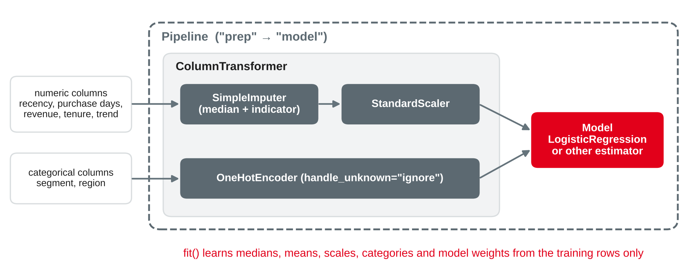
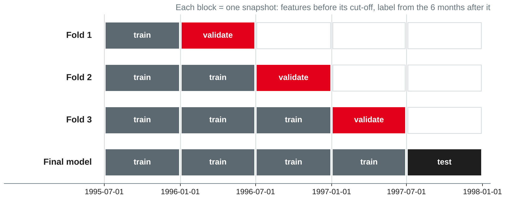

Data Analytics
Lab brief · three tracks · scikit-learn pipelines · tuning with time-aware validation · interpreting and communicating results · portfolio notebook 2
DHBW Mannheim · Data Science and Artificial Intelligence · Semester 5
churn_features: 10,000 active customers, cut-off 1 July 1997, 34.5 % churners in the next 6 monthsToday's question: can a tuned pipeline beat the simple rule — and how do you show the result honestly, whatever it is?
Portfolio notebook 2: one ML use case, end to end
The question is not "which algorithm is best?" but "does ML improve this decision — and how sure are we?"
Own compilation based on Chapman et al. (2000) and Provost and Fawcett (2013).
| A Churn prediction | B Customer segmentation | C Anomaly detection | |
|---|---|---|---|
| Decision | Whom to call or send an offer | Which offer for which group | Which order lines to audit |
| Unit | Customer at a cut-off | Customer at a snapshot date | Order line |
| Task type | Classification (supervised) | Clustering (unsupervised) | Anomaly scoring (unsupervised) |
| Methods you know | Logistic regression, trees, ensembles | k-means, hierarchical clustering | Isolation forest, distance-based scores |
| Baseline | Rule: fewest purchase days | Existing market segments | z-score rule |
| Judged by | Lift and profit on a later cut-off | Distinct, stable, usable groups | Hits in the top k = audit capacity |
Own compilation based on Provost and Fawcett (2013) and scikit-learn developers (n.d.-a, n.d.-e).
Applied with the churn starter

Own illustration based on scikit-learn developers (n.d.-g).
WITH hist AS (
SELECT customer_key,
$cutoff - max(date_key) AS recency_days,
count(DISTINCT date_key) AS purchase_days,
coalesce(sum(revenue) FILTER (date_key >= $cutoff - INTERVAL 12 MONTH), 0)
AS revenue_12m,
$cutoff - min(date_key) AS tenure_days,
coalesce(sum(revenue) FILTER (date_key >= $cutoff - INTERVAL 6 MONTH), 0)
/ nullif(sum(revenue) FILTER (date_key >= $cutoff - INTERVAL 12 MONTH
AND date_key < $cutoff - INTERVAL 6 MONTH), 0) AS revenue_trend
FROM fact_sales WHERE date_key < $cutoff GROUP BY customer_key),
future AS (
SELECT DISTINCT customer_key FROM fact_sales
WHERE date_key >= $cutoff AND date_key < $cutoff + INTERVAL 6 MONTH)
SELECT $cutoff AS cutoff, h.*, c.segment, c.region,
(future.customer_key IS NULL)::INT AS churned
FROM hist h JOIN dim_customer c USING (customer_key)
LEFT JOIN future USING (customer_key) ORDER BY customer_keyOwn example with TPC-H data (Transaction Processing Performance Council, n.d.).
from datetime import date
import duckdb, numpy as np, pandas as pd
from sklearn.compose import ColumnTransformer
from sklearn.impute import SimpleImputer
from sklearn.linear_model import LogisticRegression
from sklearn.pipeline import Pipeline
from sklearn.preprocessing import OneHotEncoder, StandardScaler
con = duckdb.connect("tpch.duckdb", read_only=True)
def features(cutoff):
return con.execute(FEATURES_SQL, {"cutoff": cutoff}).df()
cutoffs = [date(1995, 7, 1), date(1996, 1, 1), date(1996, 7, 1), date(1997, 1, 1)]
train = pd.concat([features(c) for c in cutoffs], ignore_index=True)
test = features(date(1997, 7, 1))
num = ["recency_days", "purchase_days", "revenue_12m", "tenure_days", "revenue_trend"]
cat = ["segment", "region"]
prep = ColumnTransformer([
("num", Pipeline([("impute", SimpleImputer(strategy="median", add_indicator=True)),
("scale", StandardScaler())]), num),
("cat", OneHotEncoder(handle_unknown="ignore"), cat)])
pipe = Pipeline([("prep", prep), ("model", LogisticRegression(max_iter=1000))])Own example based on Pedregosa et al. (2011) and scikit-learn developers (n.d.-g).
GridSearchCV | RandomizedSearchCV | |
|---|---|---|
| Candidates | Every combination of the listed values | n_iter samples from lists or distributions |
| Good for | Few parameters, few values | Many parameters, continuous ranges |
| Our use | model__C of the logistic regression | Four parameters of gradient boosting |
step__parameter, e.g. model__Cscoring decides what "best" means — e.g. "roc_auc", "average_precision" or your own scorercv decides how honest the estimate is: next slideBased on scikit-learn developers (n.d.-d, n.d.-h) and Bergstra and Bengio (2012).

Own illustration based on scikit-learn developers (n.d.-b) and Kaufman et al. (2012).
from sklearn.model_selection import GridSearchCV
def snapshot_folds(cutoff): # train on all earlier snapshots, validate on the next
dates = sorted(cutoff.unique())
return [(np.where(cutoff < d)[0], np.where(cutoff == d)[0]) for d in dates[1:]]
search = GridSearchCV(pipe, {"model__C": [0.001, 0.01, 0.1, 1, 10]},
cv=snapshot_folds(train.cutoff), scoring="roc_auc")
search.fit(train[num + cat], train.churned)
print(search.best_params_, round(search.best_score_, 3))
p_test = search.predict_proba(test[num + cat])[:, 1] # test cut-off 1997-07-01Own example based on scikit-learn developers (n.d.-b, n.d.-h).
| Score | Validation AUC (3 folds) | Test AUC | Top-10 % lift | Profit, top 20 % called |
|---|---|---|---|---|
| Rule: fewest purchase days | 0.615 | 0.627 | 1.35 | 257,000 |
| Logistic regression, tuned C | 0.615 | 0.627 | 1.37 | 248,000 |
| Gradient boosting, 20 random candidates | 0.611 | 0.625 | 1.36 | 266,000 |
Own analysis with TPC-H data (Transaction Processing Performance Council, n.d.); profit with the cost matrix of session 7, based on Provost and Fawcett (2013, Chapter 7).
from sklearn.cluster import KMeans
from sklearn.metrics import silhouette_score
from sklearn.preprocessing import FunctionTransformer
cust = con.sql("""
SELECT f.customer_key,
DATE '1997-07-01' - max(f.date_key) AS recency_days,
count(DISTINCT f.date_key) AS purchase_days,
sum(f.revenue) / count(DISTINCT f.date_key) AS revenue_per_day,
avg((p.part_type LIKE 'PROMO%')::INT) AS promo_share
FROM fact_sales f JOIN dim_part p USING (part_key)
WHERE f.date_key < DATE '1997-07-01'
GROUP BY f.customer_key ORDER BY f.customer_key""").df()
feats = ["recency_days", "purchase_days", "revenue_per_day", "promo_share"]
prep = ColumnTransformer([
("log", Pipeline([("log", FunctionTransformer(np.log1p)),
("scale", StandardScaler())]), ["recency_days"]),
("scale", StandardScaler(), ["purchase_days", "revenue_per_day", "promo_share"])])
for k in range(2, 9):
km = Pipeline([("prep", prep), ("kmeans", KMeans(n_clusters=k, n_init=10, random_state=42))])
labels = km.fit_predict(cust[feats])
print(k, round(silhouette_score(km[:-1].transform(cust[feats]), labels), 3))Own example with TPC-H data (Transaction Processing Performance Council, n.d.), based on scikit-learn developers (n.d.-a).
| Cluster (k = 4) | Customers | Revenue share | Median recency | Purchase days | Revenue per day | Promo share | Churn next 6 months |
|---|---|---|---|---|---|---|---|
| Regulars | 36 % | 51 % | 45.5 days | 17.7 | 136,800 | 16.5 % | 24.6 % |
| Big baskets | 22 % | 21 % | 177 days | 9.8 | 168,800 | 15.6 % | 40.2 % |
| Promo buyers | 19 % | 13 % | 177 days | 9.4 | 124,900 | 24.1 % | 40.5 % |
| Small occasional | 23 % | 15 % | 193 days | 9.2 | 119,100 | 11.3 % | 39.5 % |
Own analysis with TPC-H data (Transaction Processing Performance Council, n.d.); metrics from scikit-learn developers (n.d.-a); profiling based on Provost and Fawcett (2013, Chapter 6).
lines = con.sql("""
WITH ref AS ( -- reference unit price per part, before 1997
SELECT part_key, median(revenue / quantity) AS ref_price
FROM fact_sales WHERE date_key < DATE '1997-01-01' GROUP BY part_key)
SELECT f.date_key, f.customer_key, f.part_key,
f.quantity::DOUBLE AS quantity,
(f.revenue / f.quantity) / r.ref_price AS price_ratio
FROM fact_sales f JOIN ref r USING (part_key)
WHERE year(f.date_key) = 1997
ORDER BY f.date_key, f.customer_key, f.part_key""").df()
rng = np.random.default_rng(42) # plant 180 known anomalies in a copy
audit = lines.copy(); audit["kind"] = "normal"
idx = rng.choice(len(audit), 180, replace=False)
a, b, c = idx[:60], idx[60:120], idx[120:]
audit.loc[a, "price_ratio"] *= rng.uniform(1.3, 2.0, 60)
audit.loc[b, "price_ratio"] = rng.uniform(1.12, 1.20, 60)
audit.loc[c, "quantity"] = rng.integers(51, 101, 60).astype(float)
audit.loc[a, "kind"], audit.loc[b, "kind"], audit.loc[c, "kind"] = "gross price", "subtle price", "quantity"Own example with TPC-H data (Transaction Processing Performance Council, n.d.).
from sklearn.ensemble import IsolationForest
feats = ["quantity", "price_ratio"]
z = (audit[feats] - audit[feats].mean()) / audit[feats].std()
audit["z_score"] = z.abs().max(axis=1) # baseline: largest |z|
iso = IsolationForest(n_estimators=200, random_state=42).fit(audit[feats])
audit["iso_score"] = -iso.score_samples(audit[feats]) # higher = more unusual
audit["iso_flag"] = iso.predict(audit[feats]) == -1
for score in ["z_score", "iso_score"]: # audit capacity: 180 lines
top = audit.nlargest(180, score)
print(score, (top.kind != "normal").mean().round(3), top.kind.value_counts().to_dict())
print("flagged with contamination='auto':", audit.iso_flag.sum())Own example based on Liu et al. (2008) and scikit-learn developers (n.d.-c).
| Detector (top 180 = audit capacity) | Hits | Gross price | Subtle price | Quantity |
|---|---|---|---|---|
| Rule: largest absolute z-score | 97.8 % | 60 of 60 | 60 of 60 | 56 of 60 |
| Isolation forest, defaults | 48.3 % | 60 | 26 | 1 |
Isolation forest, max_samples=2048 | 88.3 % | 60 | 60 | 39 |
Isolation forest, max_samples=4096 | 93.3 % | 60 | 60 | 48 |
contamination="auto" the forest flags 37,444 of 90,435 lines — set k from capacityOwn analysis with TPC-H data (Transaction Processing Performance Council, n.d.), based on Liu et al. (2008) and scikit-learn developers (n.d.-c).
From scores to a recommendation
| Track | Show | Example from the starters |
|---|---|---|
| A Churn | Permutation importance on the test cut-off; lift and profit by decile | Shuffling purchase days lowers the AUC by 0.125; every other feature by about 0.001 or less |
| B Segments | Profiles in business units, names, size and revenue share; later behaviour | Regulars: 36 % of customers, 51 % of revenue, 24.6 % churn |
| C Anomalies | A review list with the reason per line; hits by type | Top line: price 2.02 × the reference price |
Based on scikit-learn developers (n.d.-a, n.d.-f) and Provost and Fawcett (2013).
"Use the rule 'fewest purchase days' to choose the 2,000 customers to call. A tuned model found no more churners on the second half of 1997 (946 vs. 944 in the top 20 %), so it does not justify its operating cost."
Own compilation based on Provost and Fawcett (2013) and Chapman et al. (2000).
| Part | Content |
|---|---|
| Business understanding | Decision, owner, business and data mining success criteria |
| Framing | The six framing questions; cut-off and label window or snapshot date |
| Data and features | Point-in-time SQL, sanity checks, leakage audit |
| Baseline | Majority class, a rule, existing segments or a z-score rule |
| Modelling | One pipeline, tuning with an appropriate validation, fixed random_state |
| Evaluation | Test period or planted anomalies; business metric; comparison with the baseline |
| Interpretation | Importances, profiles or review list — in business terms |
| Suitability | Is ML worth it here? Limits, risks and next steps |
| Criterion | Suggested weight |
|---|---|
| Business framing and success criteria | 15 % |
| Data preparation and point-in-time correctness | 20 % |
| Baseline, pipeline and validation design | 25 % |
| Evaluation and interpretation in business terms | 20 % |
| Suitability assessment and communication | 15 % |
| Reproducibility and code quality | 5 % |
Notebook 2 is one of three lab notebooks (in pairs), which together make up 45 % of the portfolio. This rubric is a suggestion for orientation; the official brief and rubric are published separately.
Work in pairs on your track; all tasks go into portfolio notebook 2.
RandomizedSearchCV · compare with the rule by lift and profit · choose the number of calls · permutation importancemax_samples and discuss the risk · build a review list for the top 180GridSearchCV or RandomizedSearchCV chooses among models — it cannot add missing signalPreparation: refresh hypothesis tests and confidence intervals from Stochastics, and bring one example of a decision that was based on a test or pilot in your company.